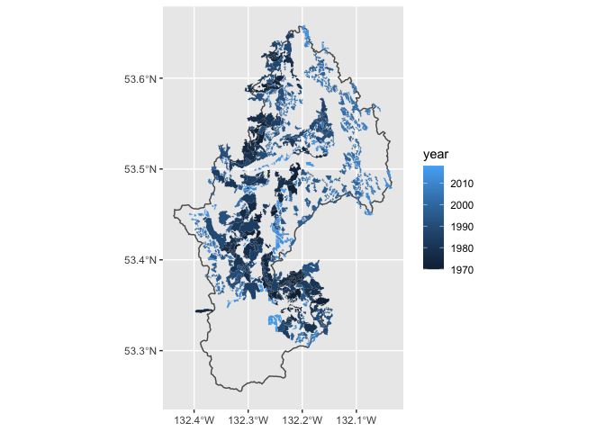

I recently created this web app mapping the logging history of Haida Gwaii, British Columbia from 1900-2017. It uses Mapbox/Mapbox GL JS for the slippy map and neat colour alteration over time. This dataset is large! To improve rendering times, I needed to reduce the file size, dissolve features by year, simplify features (without losing too much information) and convert to mbtiles file format.
The node.js command line tools mapshaper and tippecanoe can be used for these steps and R package wrappers (rmapsahper and mapboxapi) also exist. The mapboxapi R package can also be used to upload data to a Mapbox account from the console, which is pretty sweet.
This post explores two main questions:
- Can all data preparation be done within the rstats ecosystem?
- How much is performance improved by using the command line tools directly?
The rstats comfort zone
I like to keep data preparation within the rstats ecosystem for reproducibility (e.g. if a client updates data somewhere along the pipeline) and to reduce context-switching. As an rstats user I am also more comfortable navigating my way around documentation for R packages than other bits of software.
{{% admonition tip tip %}}
If you want to follow along, you’ll need to install the rmapshaper, mapboxapi, sf, ggplot2, mapdeck R packages and the mapshaper and tippecanoe node.js command line tools.
{{% /admonition %}}
Let’s load the required libraries and a small section of the logging dataset for demonstration. This is logged areas from 1970-2019 in the Yakoun River watershed.
library(sf)
library(ggplot2)
library(rmapshaper)
library(mapboxapi)
library(mapdeck)
logged <- st_read("data/logged_yakoun.geojson", quiet = TRUE)
wshed <- st_read("data/yakoun.geojson", quiet = TRUE)
ggplot(logged) +
geom_sf(data = wshed, fill = "transparent") +
geom_sf(aes(fill = year), lwd = 0.01)

I’ll set up a function to dissolve and simplify the polygons and convert to mbtiles file format.
prepare_data_r <- function(data){
data <- data %>%
# dissolve for each year
# if you have the mapshaper installed, use sys = TRUE
rmapshaper::ms_dissolve(field = "year", sys = TRUE) %>%
# I prevent small shapes from disappearing with keep_shapes = TRUE and explode = TRUE
rmapshaper::ms_simplify(keep = 0.05, keep_shapes = TRUE, sys = TRUE)
mapboxapi::tippecanoe(input = data,
output = "data/logged_r.mbtiles",
layer_name = "logged_r",
overwrite = TRUE)
}
prepare_data_r(logged)
{{% admonition tip tip %}}
If you are running into a self-intersection error, use lwgeom::lwgeom_make_valid().
{{% /admonition %}}
Welcome command line to the party
Let’s try doing the same data prep steps with the command line tools. Here, we can work from the geojson file directly and set up a makefile to streamline the process. For a great tutorial on mapshaper and makefile check out this beautiful post.
The makefile sits in the root of our working directory and looks like this.
mapshape_simplify:
mapshaper data/logged_yakoun.geojson \
-dissolve2 fields=year \
-simplify 1% keep-shapes \
-o data/logged_simplify.json
tippecanoe_layer:
tippecanoe -o data/logged.mbtiles --coalesce-densest-as-needed data/logged_simplify.json --force
sweet_sweet_data:
make mapshape_simplify
make tippecanoe_layer
I’ll set up a simple function to call the makefile from an R script.
prepare_data_make <- function(){
system("make sweet_sweet_data")
}
prepare_data_make()
Some benchmarking
We can use the microbenchmark package to compare the performance of these two pipelines.
library(microbenchmark)
# we have to modify our r package function slightly to clear the tempdir after each cycle
prepare_data_rstats <- function(data){
file.remove(list.files(tempdir(), full.names = T, pattern = "geojson"))
prepare_data_r(data)
}
res <- microbenchmark::microbenchmark(prepare_data_rstats(logged), prepare_data_make(), times = 10)
ggplot2::autoplot(res)
## Coordinate system already present. Adding new coordinate system, which will replace the existing one.

Using the command line tools directly takes about a third of the time. This was expected as there’s bound to be some overhead in the wrappers. I don’t fully understanding the underpinning functionality, but I suspect that the R wrappers lag because they have to read and write temporary files to handle sf objects as input/output.
Upload to Mapbox
Finally, I’ll use the mapboxapi R package to upload the data to Mapbox. See this guide for more on how to setup mapboxapi and access tokens.
upload_tiles(input = "data/logged.mbtiles",
username = "northbeachconsulting",
tileset_id = "logged_yakoun")
Final thoughts
It is pretty great that all of this can be done within rstats. Benchmarking showed that using the command line tools resulted in some speed gains. However, for our small dataset, this was only ~2 seconds. If your dataset is small and you are more familiar wtih rstats, I would probably just stick with the R packages. I recently started work on an app visualizing logging history for the entire province (~4gb spatial file) and have found that the R package pipeline more or less breaks with data this large. Moreover, using a makefile and the system() rstats function, it is still possible to reproduce the same outputs by sourcing an R script.
Either way, all these tools are amazing and open source so thanks to the developers (Andy Teucher, Matthew Bloch, Kyle Walker, and the Mapbox team) and contributors!